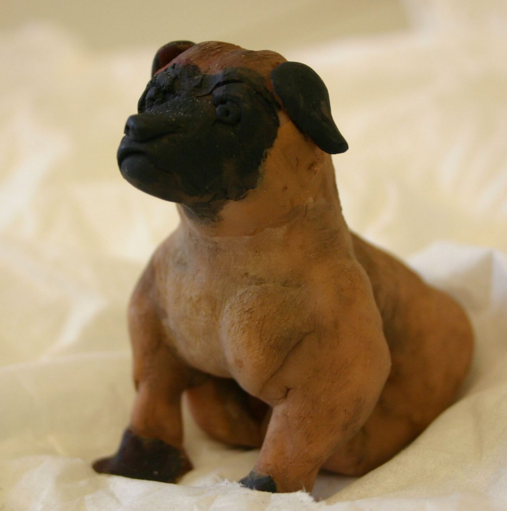

This is a story on what I like my art website to look like. I been doing clay sculture for a while. I been doing this with the hope of making people day a little brighter and to work out my own feelings. I really hope to one day develop a side job that i can do in my retirement.
It a odd hobby but i do find it relaxes me and I like to share tips and tricks with people. There is some cost to this.
My favoriate clay is Super sculpty
Money, time and space has been a hinderice in really expanding the hobby. It with a eye on these problem that I am working on a job to give me the space (budget and time) to work on things.
Despite the problem I have got some art work done.
Here is a example of first works

Here is a example of a dog with more time and just a toothpick. been proud of it for a while. 